Day 23｜O Cebreiro、最後的爬升、人生也是這樣
2026 年 6 月 12 日 · Villafranca del Bierzo → O Cebreiro · 29km
第二十三天，29 公里、爬升 1085 公尺——出發前看到這個數字，心裡只有兩個字：硬仗。這是整條法國之路數一數二陡的路段，傳說中的「最後的爬升」。趁著月色摸黑出發，沿著潺潺的流水聲往前走，頭燈往地上一照，居然捕捉到一個隱藏版微笑。好吧 Camino，算你會鼓勵人，今天陪你拚了。
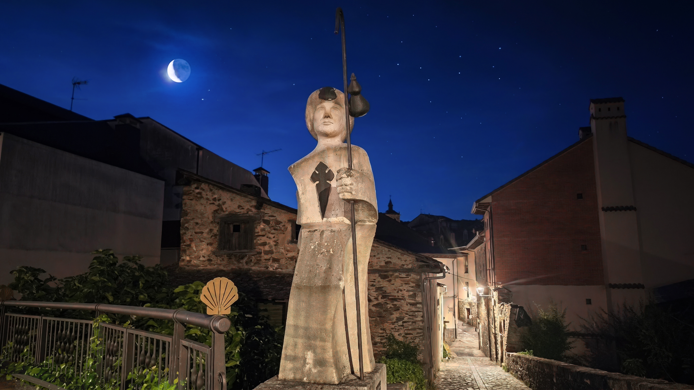
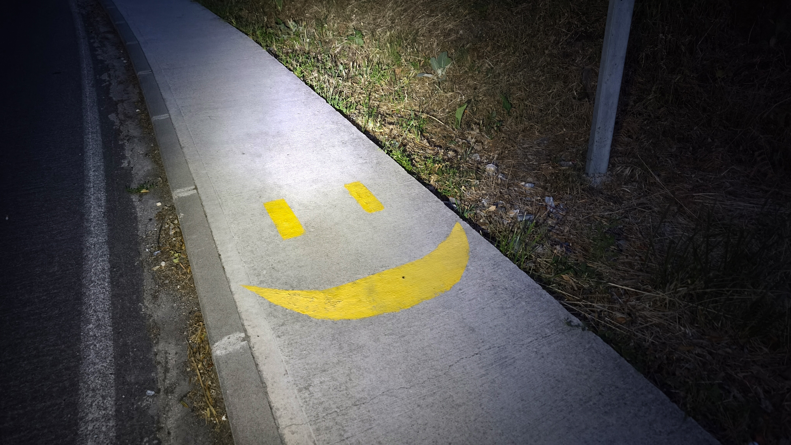
這條路大多時候是一個人走，難免有些枯燥，但只要留心身邊，驚喜自己會冒出來：山坡上悠閒吃草的鹿群，晨光灑滿整片花海。走到剩下 190 公里的石碑前，真的滿滿感觸——800 公里聽起來很長，但隨著每一天的腳步，我們離聖地牙哥越來越近了。正式踏進加利西亞（Galicia），連石碑的氣質都不一樣了。
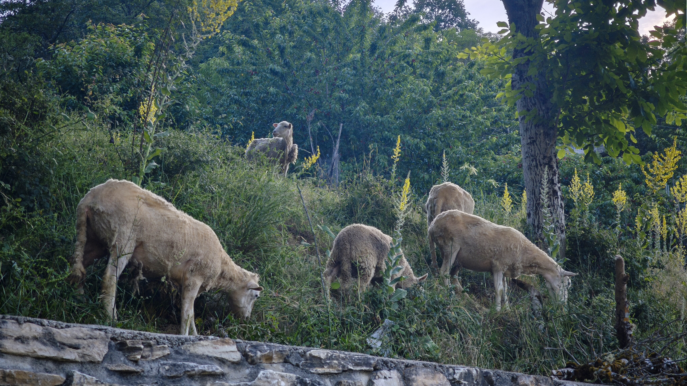
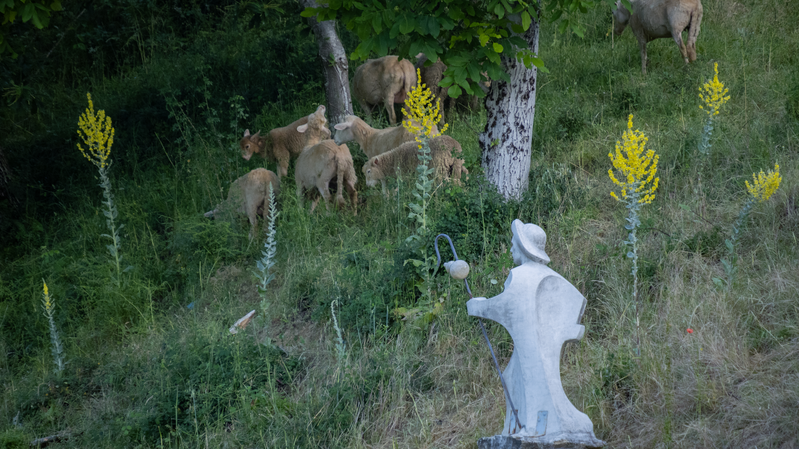
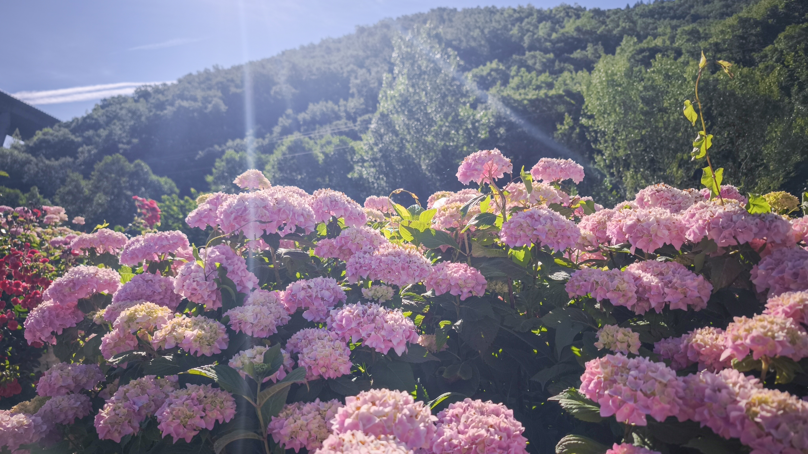
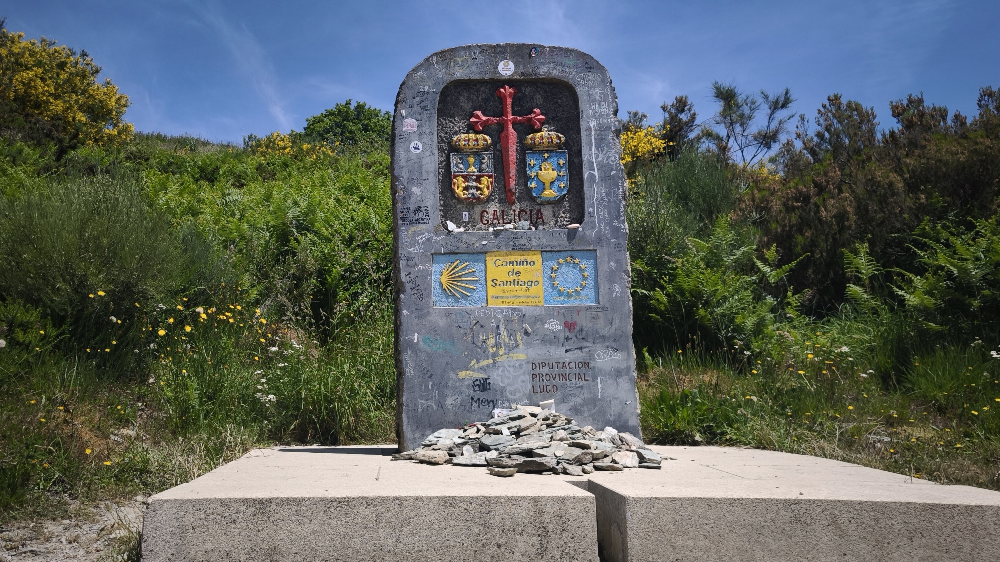
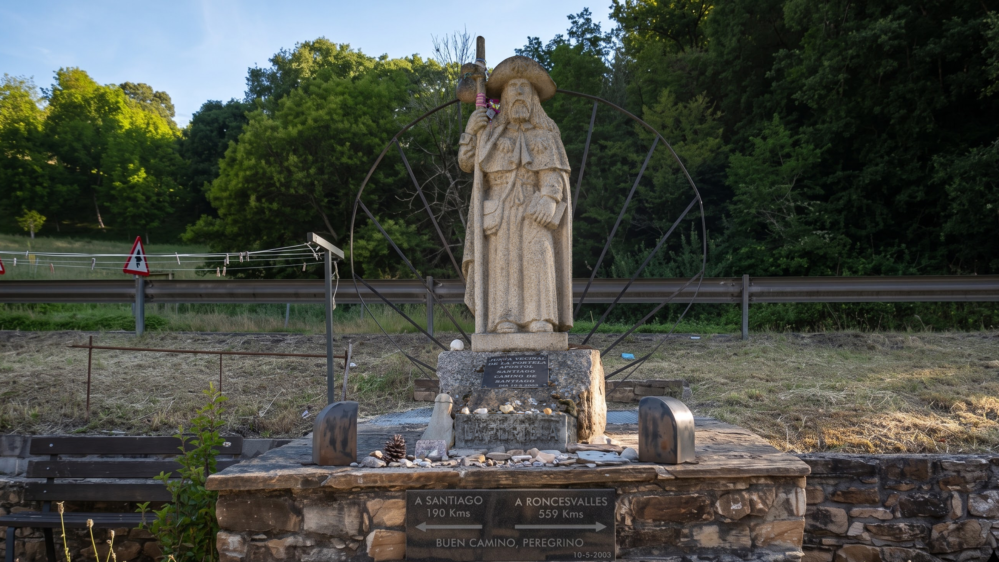
路上再次巧遇從澳洲來的台灣人，大家一路有說有笑，鄉愁直接被接住；還遇到一位為了做研究來走朝聖之路的日本交換學生，語言不通沒關係，翻譯軟體拿出來照樣能聊整路。不過越往山上走，考驗越重口味——路邊的動物大便越來越多，那氣味真的會讓人靈魂出竅。熬過氣味的地獄考驗，眼前的視野跟著豁然開朗：太陽很曬，但山頂的風無比清涼，人生也是這樣吧。
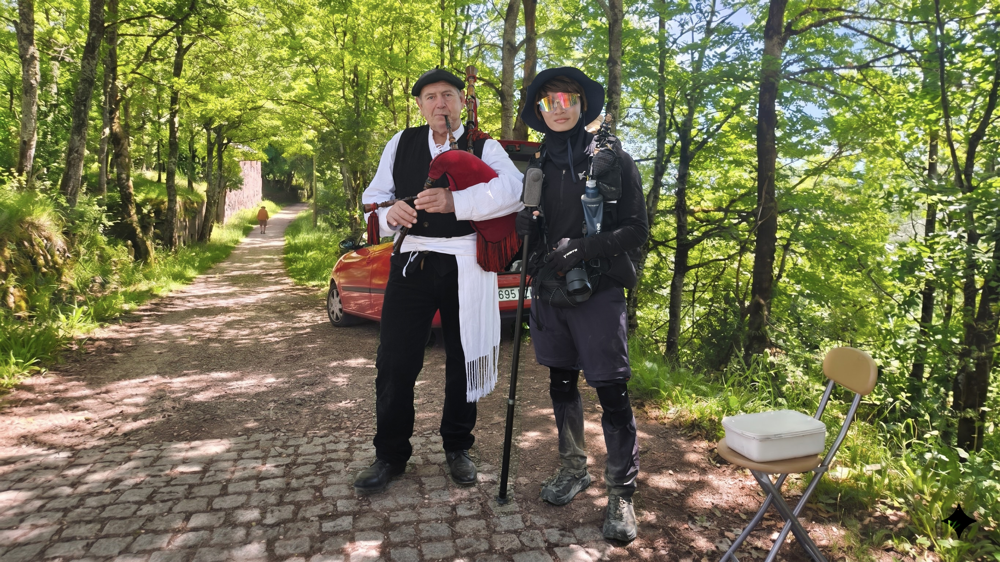
快進小鎮時，樹林裡突然傳來悠揚的風笛聲！原來是一位穿著傳統服飾的大叔站在路邊吹奏，就像是專程為朝聖者準備的迎賓曲。爬了快 30 公里，聽到這個，眼淚差點跟汗水一起掉下來。
一進小鎮，這家禮品店絕對必訪！只要有消費，老闆直接霸氣贈送專屬國旗徽章——在朝聖路上拿到屬於自己國家的徽章，那種被認出的感動，真的很難形容。
終於抵達這間讓人又愛又恨的庇護所！內部床位超級密集，轉身都有難度。強烈提醒大家務必顧好隨身財物——我夥伴的錢直接在這裡被偷了，據說失竊在這裡早已是常態。更崩潰的是淋浴間居然沒有門簾，夥伴還遇到有外國人會「特地」走錯，隱私跟安全感直接大扣分。⚠️ 警示：貴重物品一定隨身、洗澡最好結伴、可以自備一條大毛巾當門簾。
不過，這裡卻藏著整趟 Camino 最無敵的夕陽。我們先去教堂參加晚禱，接受朝聖者專屬的祝福，還拿到一枚畫著黃色箭頭的小石頭——小小一顆，握在手心卻很有重量，好像把一整天的路都收進去了。
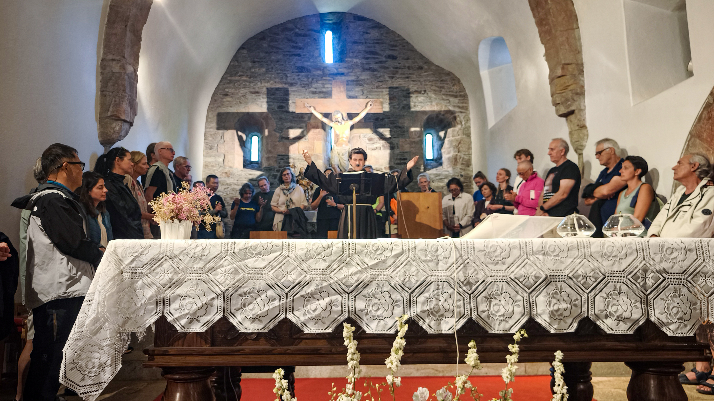
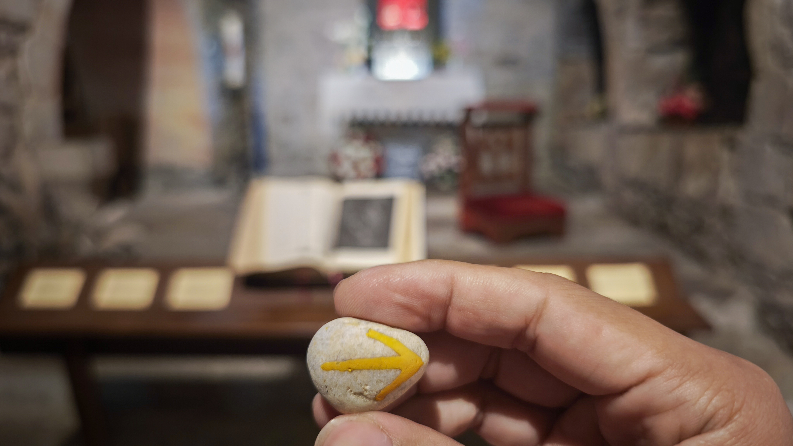
接著回來靜靜等待夕陽。當絕美的火燒雲染紅整片山谷，所有的累、所有的狼狽，都被這片天空救贖了。大自然的美，絕對是今天最完美的收尾——最後的爬升，人生也是這樣，最陡的那一段，風景最好。
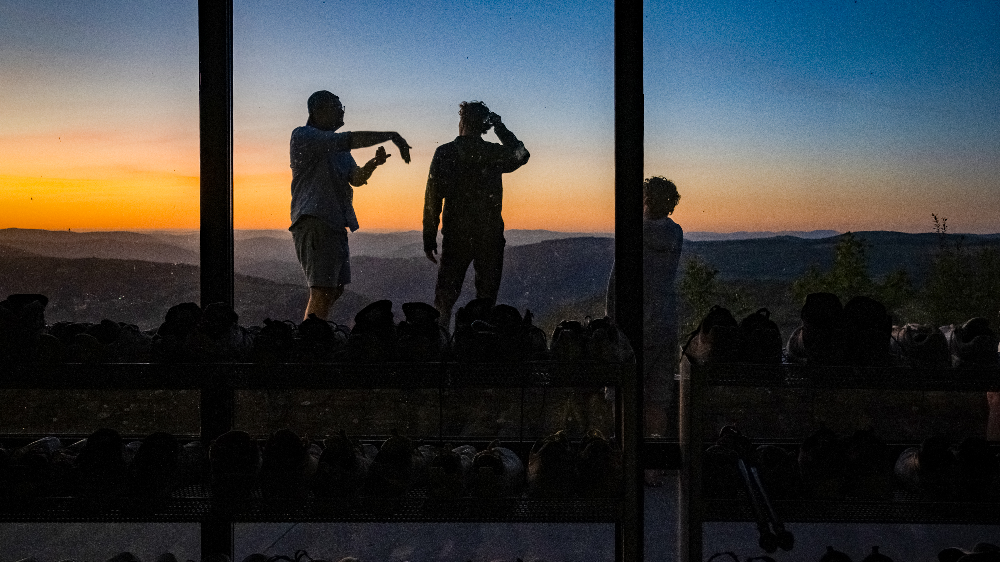
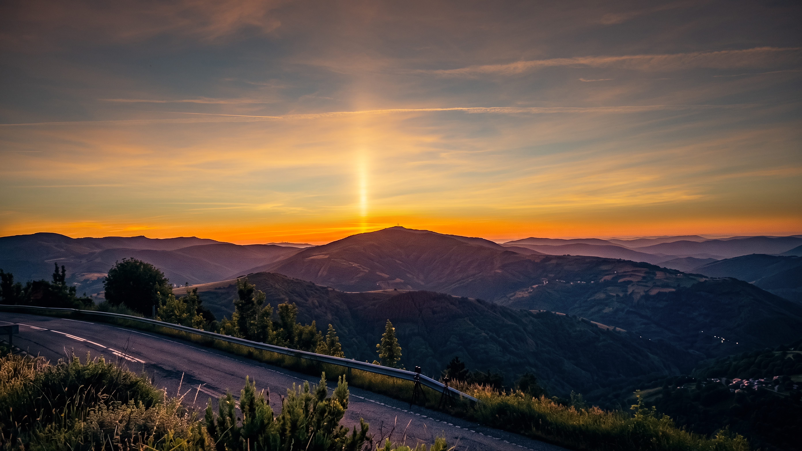
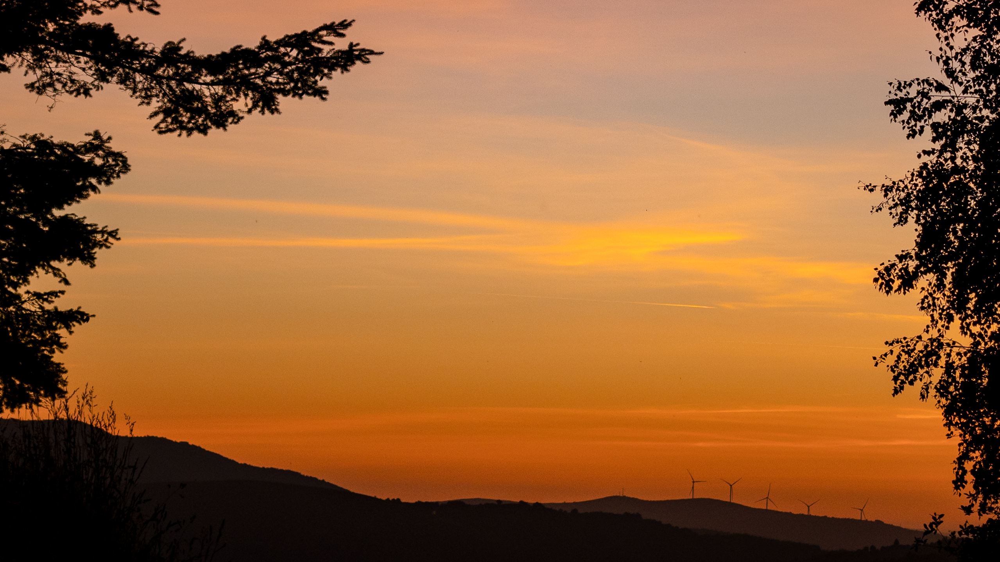
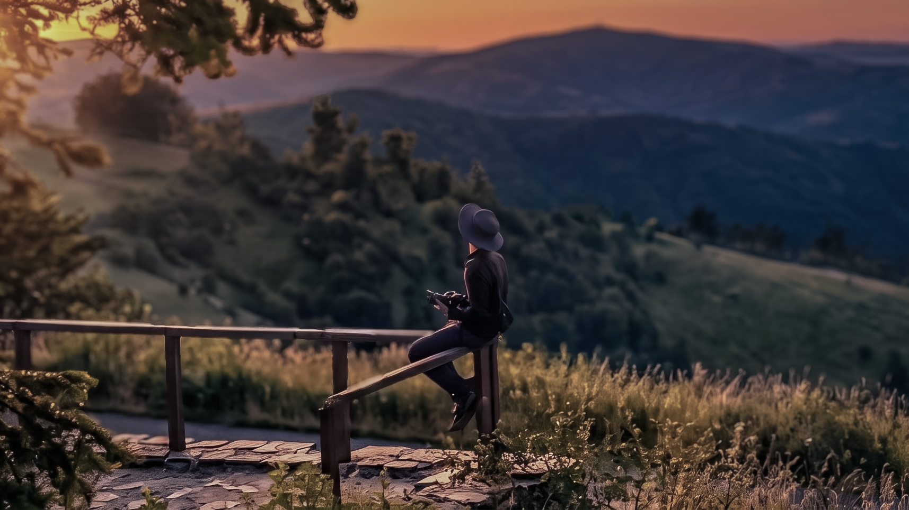
回望這座石頭小鎮，白馬在街頭靜靜踱步，石板路配著山間的霧氣，彷彿時間在這裡走得特別慢。能在爬升 1085 公尺之後看到這一幕，一切都值了。
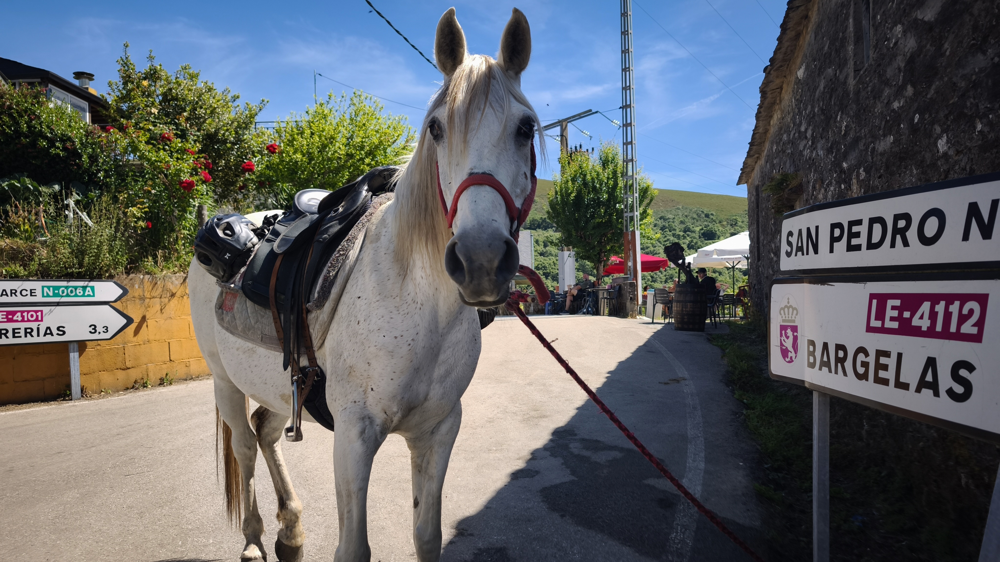
📚 朝聖者小百科：O Cebreiro
O Cebreiro（奧塞布雷羅）是法國之路進入加利西亞（Galicia）後的第一個山頂村莊，海拔約 1300 公尺，終年雲霧繚繞，被稱為「霧之國」。
村裡最具代表性的就是 pallozas（圓形石屋）——茅草覆頂的圓形石造建築，是前羅馬時期凱爾特人留下的居住形式，冬天窩在裡面，又暖又魔幻。
村中的聖瑪利亞教堂（Santa María la Real）是朝聖路上最古老的教堂之一，傳說 14 世紀在此發生聖體奇蹟，聖杯圖案也因此成為加利西亞的象徵。
🥾 29km · 爬升 1085m——最後的爬升，人生也是這樣：最陡的那一段，風景最好
| 早餐：肉排套餐＋咖啡 | €10.0 |
| 啤酒 | €3.0 |
| 超市採買＋晚餐微波＋自製 Sangría | €9.0 |
| 住宿 | €10.0 |
| 合計 | €32.0 |
🎬 對應 Vlog EP6｜濃霧中的鐵十字架！放下石頭後真的會變輕嗎？入住《西班牙寄宿》拍攝地